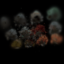
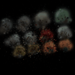

A. Best Performing
Number of Iterations: 1000
[*] Evaluation --- Mean PSNR: 24.673
[*] Evaluation --- Mean SSIM: 0.693
parameters = [
{'params': [gaussians.pre_act_opacities], 'lr': 0.05, "name": "opacities"},
{'params': [gaussians.pre_act_scales], 'lr': 0.01, "name": "scales"},
{'params': [gaussians.colours], 'lr': 0.02, "name": "colours"},
{'params': [gaussians.means], 'lr': 0.01, "name": "means"},
{'params': [gaussians.pre_act_quats], 'lr': 0.02, "name": "quats"}
]

B. Baseline
Number of Iterations: 1000
[*] Evaluation --- Mean PSNR: 24.781
[*] Evaluation --- Mean SSIM: 0.657
parameters = [
{'params': [gaussians.pre_act_opacities], 'lr': 0.05, "name": "opacities"},
{'params': [gaussians.pre_act_scales], 'lr': 0.01, "name": "scales"},
{'params': [gaussians.colours], 'lr': 0.02, "name": "colours"},
{'params': [gaussians.means], 'lr': 0.01, "name": "means"},
{'params': [gaussians.pre_act_quats], 'lr': 0.02, "name": "quats"}
]

I used anisotropic for the best performing model. Hyperparams were not changed. Best performing model takes a little longer to train but gives cleaner results.